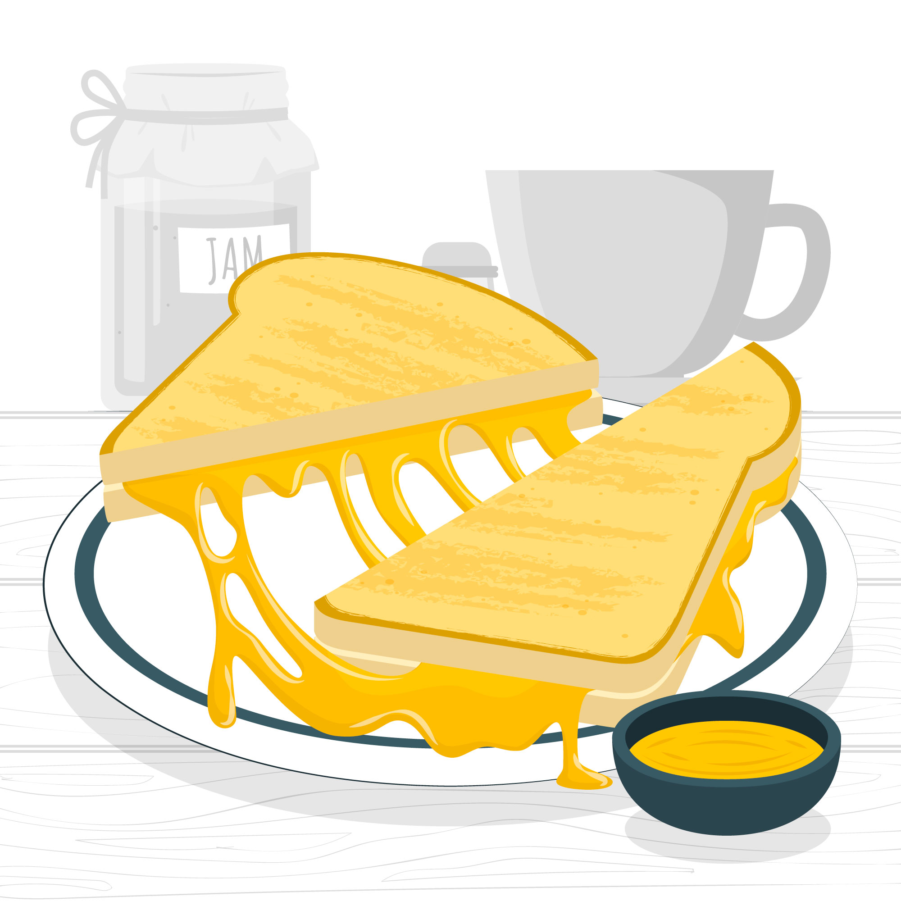

Grilled Cheese

Description
A grilled cheese sandwich is a classic comfort food made by placing cheese between two slices of buttered bread and grilling it until the bread is golden and the cheese is melted. It's quick, easy, and perfect for a cozy meal or snack.
Ingredients
- 2 slices of bread
- 1-2 slices of cheese
- Butter
Steps
- Heat a pan over medium heat.
- Butter one side of each slice of bread.
- Place one slice of bread, butter-side-down, on the pan and add cheese on top.
- Top with the second slice of bread, butter-side-up.
- Grill until both sides are golden brown and the cheese is melted.